|
Image |
Specs |
1983-1984 |
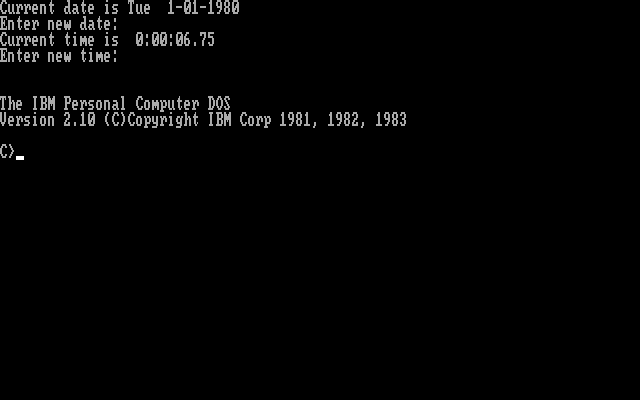 |
- CPU: Intel 8088 @ 4.77MHz
- Hard Drive: 10MB
- Memory: 128KB
- External Storage: 360KB floppy
- Display: MDA
- Sound: None
- Operating System: DOS 2.0, upgraded to DOS 2.1
|
1984-1985 |
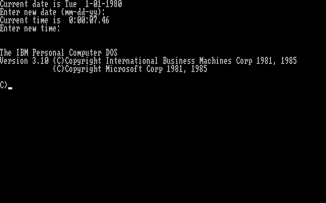 |
- CPU: Intel 8088 @ 4.77MHz
- Hard Drive: 10MB
- Memory: 256KB
- External Storage: 360KB floppy
- Display: CGA
- Sound: None
- Operating System: DOS 2.1, upgraded to DOS 3.0, upgraded to DOS 3.1
|
1985-1986 |
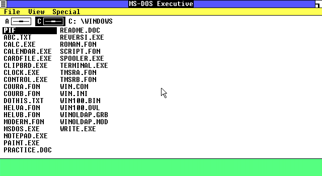 |
- CPU: Intel 286 @ 5MHz
- Hard Drive: 20MB
- Memory: 512KB
- External Storage: 1.2MB floppy
- Display: CGA
- Sound: None
- Operating System: DOS 3.1, upgraded to Windows 1.01, upgraded to Windows 1.02
|
1986-1987 |
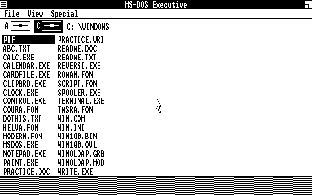 |
- CPU: Intel 286 @ 8MHz
- Hard Drive: 30MB
- Memory: 512KB
- External Storage: 1.2MB floppy
- Display: CGA
- Sound: None
- Operating System: Windows 1.02, upgraded to Windows 1.03, upgraded to Windows 1.04
|
1987-1988 |
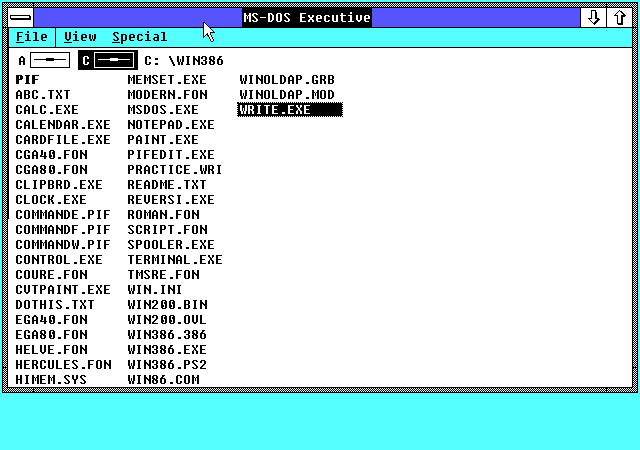 |
- CPU: Intel 386DX @ 20MHz
- Hard Drive: 115MB
- Memory: 2MB
- External Storage: 1.44MB floppy
- Display: VGA
- Sound: None
- Operating System: Windows 1.04, upgraded to Windows 2.03, upgraded to Windows 2.1
|
1988-1989 |
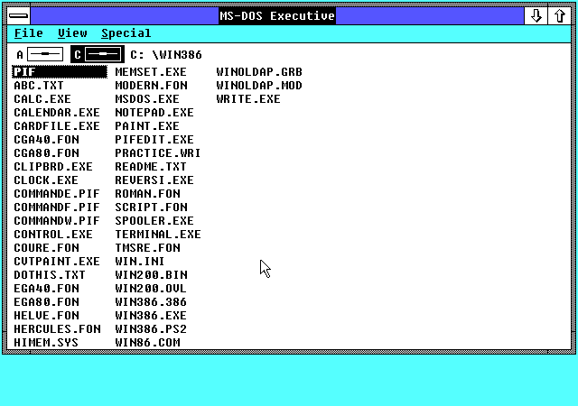 |
- CPU: Intel 386DX @ 25MHz
- Hard Drive: 120MB
- Memory: 2MB
- External Storage: 1.44MB floppy
- Display: VGA
- Sound: None
- Operating System: Windows 2.1, upgraded to Windows 2.11
|
1989-1990 |
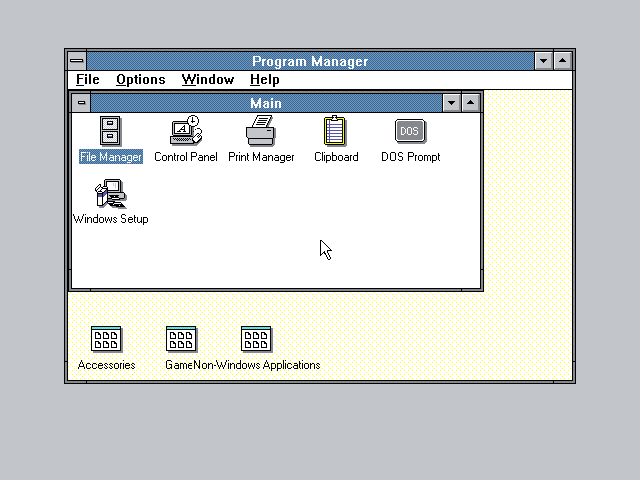 |
- CPU: Intel 386DX @ 20MHz
- Hard Drive: 120MB
- Memory: 4MB
- External Storage: 1.44MB floppy
- Display: VGA
- Sound: None
- Operating System: Windows 2.11, upgraded to Windows 3.0
|
1990-1991 |
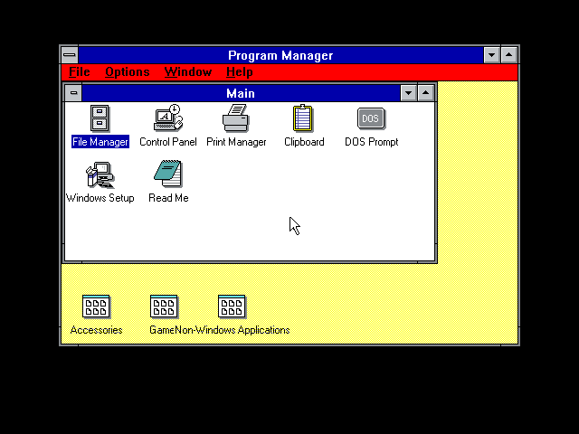 |
- CPU: Intel 286 @ 10MHz
- Hard Drive: 30MB
- Memory: 1MB
- External Storage: 1.44MB floppy
- Display: VGA
- Sound: None
- Operating System: Windows 3.0, upgraded to Windows 3.0a
|
1991-1992 |
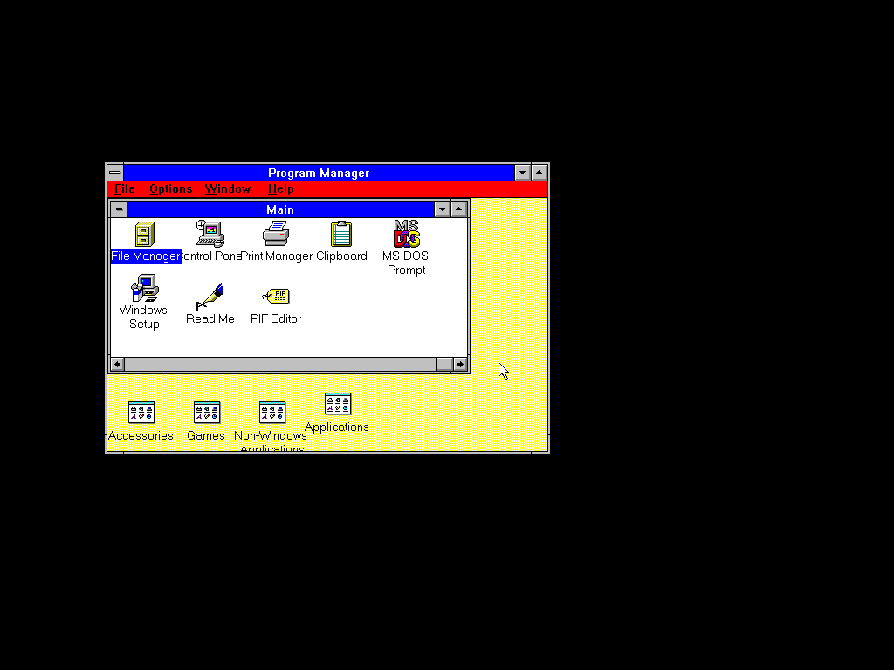 |
- CPU: Intel 386DX @ 25MHz
- Hard Drive: 160MB
- Memory: 2MB
- External Storage: 1.44MB floppy
- Display: VGA
- Sound: None
- Operating System: Windows 3.0a, upgraded to Windows 3.1
|
1992-1993 |
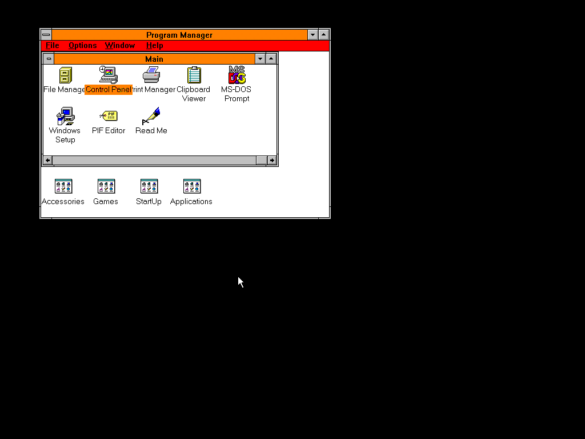 |
- CPU: Intel 486DX @ 50MHz
- Hard Drive: 1GB
- Memory: 16MB
- External Storage: 2.88MB floppy
- Display: XGA
- Sound: None
- Operating System: Windows 3.1
|
1993-1994 |
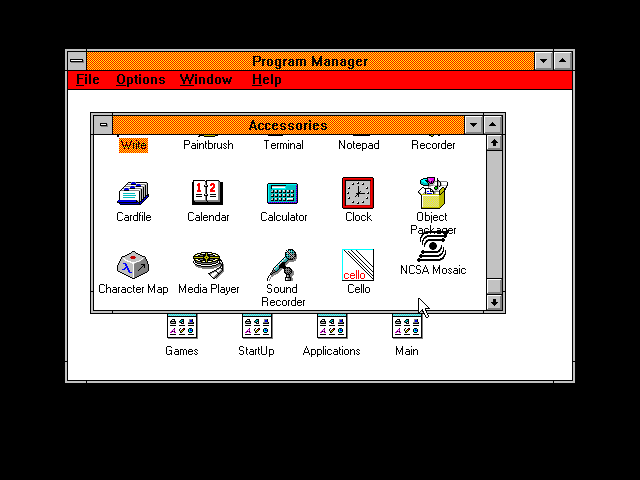 |
- CPU: Intel 486SL @ 25MHz
- Hard Drive: 250MB
- Memory: 4MB
- External Storage: 1.44MB floppy
- Display: Chips & Technologies 65530, 640x480 @ 256 colours
- Sound: None
- Operating System: Windows 3.1, upgraded to Windows 3.11
|
1994-1995 |
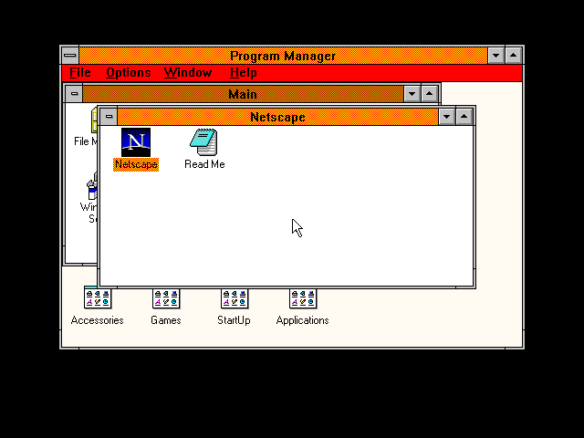 |
- CPU: Intel DX4 @ 75/25MHz
- Hard Drive: 540MB
- Memory: 4MB
- External Storage: 1.44MB floppy
- Display: WD90C24A, 1MB VRAM, 640x480 @ 256 colours
- Sound: CS4248
- Operating System: Windows 3.11
|
1995-1996 |
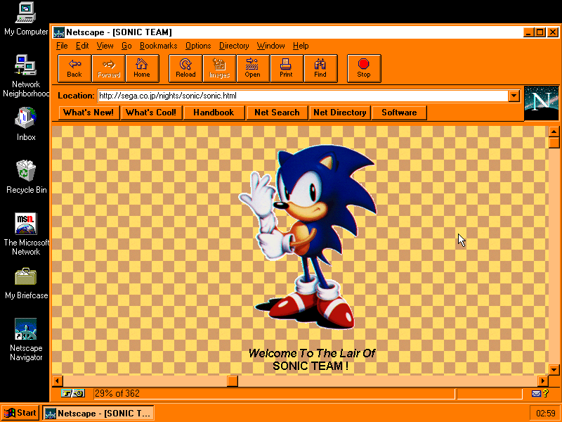 |
- CPU: Intel Pentium @ 100/66MHz
- Hard Drive: 810MB
- Memory: 32MB
- External Storage: 1.44MB floppy, 2X CD-ROM
- Display: WD90C24a Rev. C, 1MB VRAM, 800x600 @ 65,536 colours
- Sound: CS4231
- Operating System: Windows 3.11, upgraded to Windows 95, upgraded to OSR1
|
1996-1997 |
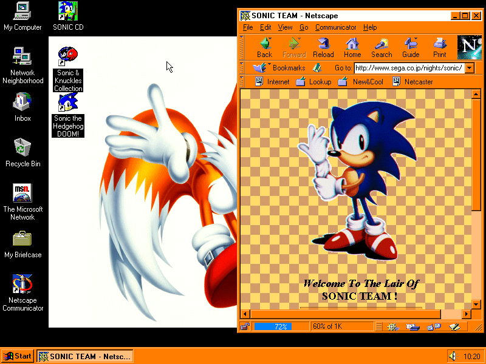 |
- CPU: Intel Pentium @ 100/66MHz
- Hard Drive: 1.2GB
- Memory: 32MB
- External Storage: 1.44MB floppy, 2X CD-ROM
- Display: WD90C24a Rev. C, 1MB VRAM, 800x600 @ 65,536 colours
- Sound: CS4231
- Operating System: Windows 95 OSR1
|
1997-1998 |
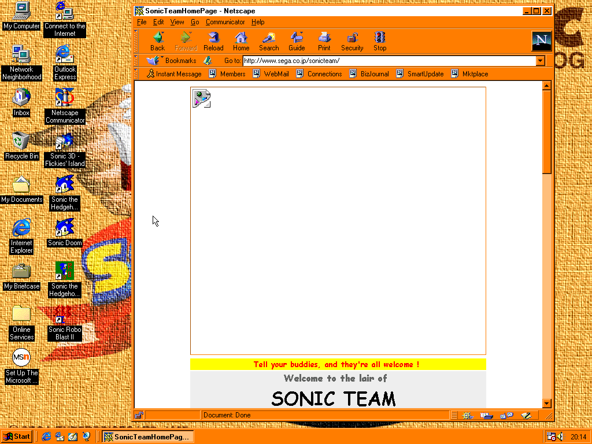 |
- CPU: Intel Pentium MMX @ 166/66MHz
- Hard Drive: 3GB (1.99GB on C, 885MB on D)
- Memory: 32MB
- External Storage: 1.44MB floppy, 8X CD-ROM
- Display: Trident CYBER9385, 2MB VRAM, 1024x768 @ 65,536 colours
- Sound: 16-bit audio chip
- Operating System: Windows 95 OSR2, upgraded to Windows 98
|
1998-1999 |
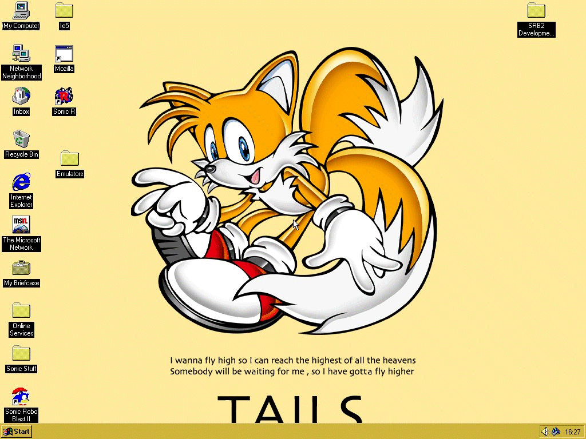 |
- CPU: Intel Pentium MMX @ 200MHz
- Hard Drive: 3.2GB
- Memory: 32MB
- External Storage: 1.44MB floppy, CD-ROM
- Display: Neomagic MagicGraph128XD, 2MB VRAM, 800x600
- Sound: Yes
- Operating System: Windows 95 OSR2.5, upgraded to Windows 98, upgraded to Windows 98 SE
|
1999-2000 |
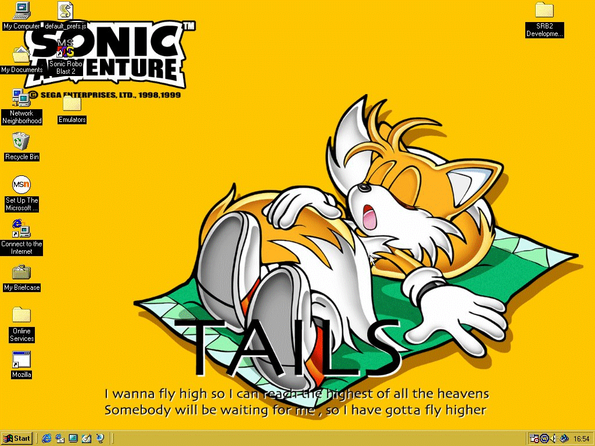 |
- CPU: Intel Mobile Pentium II @ 300MHz
- Hard Drive: 5.4GB (2GB on C FAT16, 3.4GB on D FAT32)
- Memory: 64MB
- External Storage: 1.44MB floppy, 2X DVD-ROM
- Display: NeoMagic MagicMedia256AV, 2.5MB VRAM, 1024x768 @ 16.7 million colours
- Sound: NeoMagic NMA2, 16-bit SoundBlaster Pro support
- Operating System: Windows 98, upgraded to Windows 98 SE
|
2000-2001 |
|
- CPU: Intel Mobile Celeron @ 550MHz
- Hard Drive: 12GB
- Memory: 64MB
- External Storage: 24X CD-ROM
- Display: Silicon Motion Inc. LynxEM4+ SM712, 4MB VRAM, 1024x768 @ 262,000 colours
- Sound: Intel AC97, SoundBlaster Pro support
- Operating System: Windows 2000, upgraded to SP1, upgraded to SP2
|
2001-2002 |
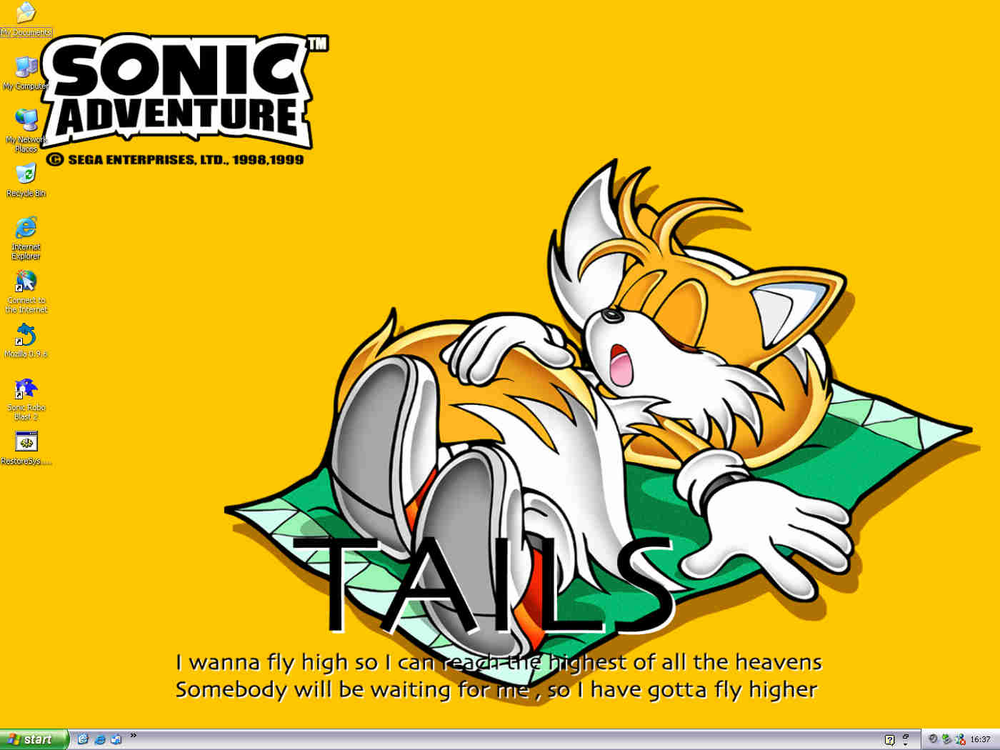 |
- CPU: Intel Mobile Pentium III @ 1.13GHz
- Hard Drive: 48GB
- Memory: 128MB
- External Storage: 1.44MB floppy, 8X DVD-ROM
- Display: S3 SuperSavage IXC16, 16MB VRAM, 1400x1050 @ 16.7 million colours
- Sound: ICH AC97, SoundBlaster compatible
- Operating System: Windows 2000 SP2, upgraded to Windows XP
|
2002-2003 |
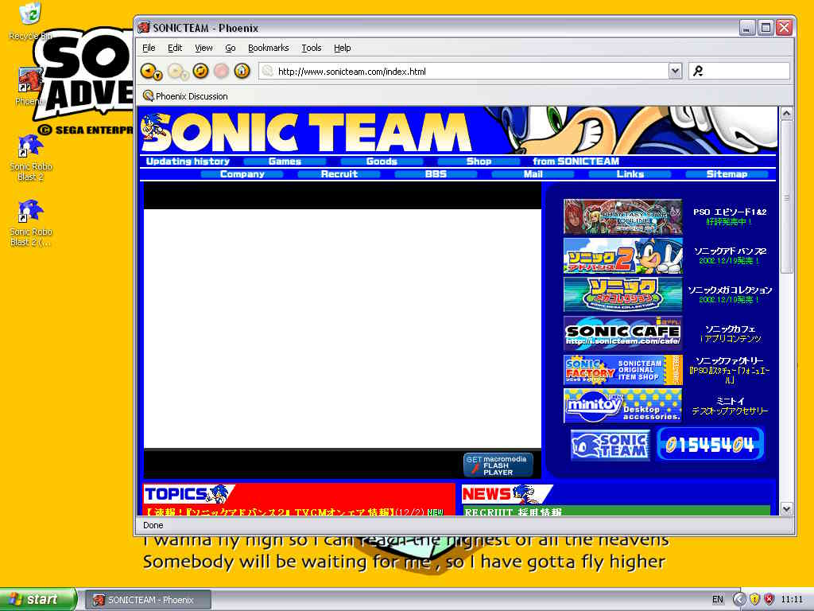 |
- CPU: Intel Pentium 4-M @ 1.8GHz
- Hard Drive: 40GB
- Memory: 256MB
- External Storage: 8X DVD-ROM/CD-RW combo
- Display: ATI Mobility Radeon 7000, 16MB VRAM, 1024x768
- Sound: ICH AC97, SoundBlaster Pro compatible
- Operating System: Windows XP, upgraded to SP1
|